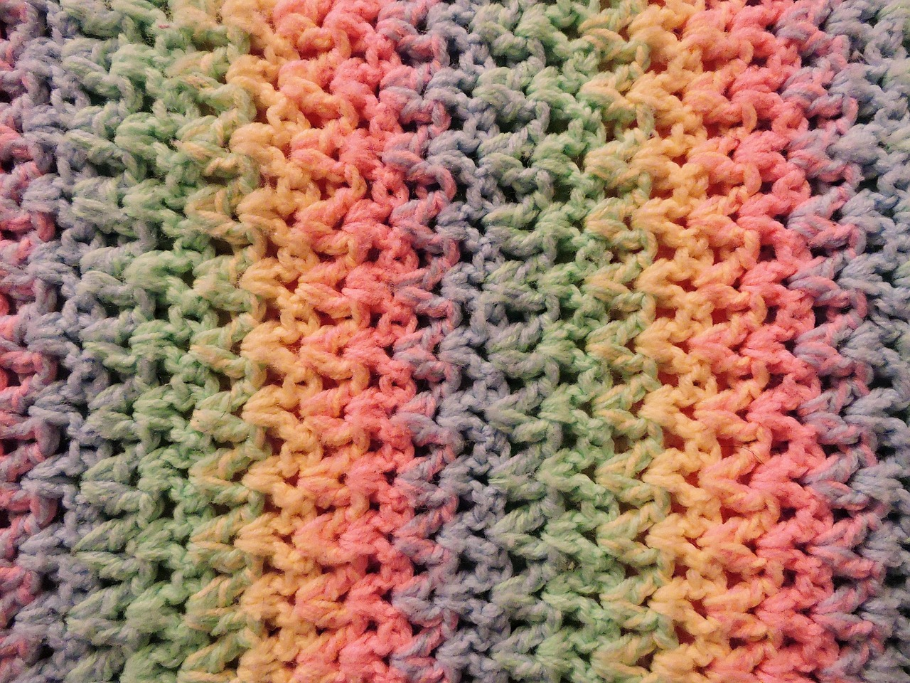

Crocheting is one of those hobbies that brings out your creative side while keeping your hands busy, and let me tell you—it’s so much more than just making cute blankets! Imagine sinking into your favorite chair with a cozy yarn ball and a crochet hook in hand, ready to stitch your way through a relaxing evening. Whether you're creating a chunky scarf for winter or making tiny amigurumi animals for friends, there’s something about the rhythm of pulling loops through loops that can really put your mind at ease. It's wonderful stress relief!
What’s awesome about crocheting is that it’s so versatile. You don’t need to be a master to make something beautiful. With a few basic stitches, you can whip up a handmade treasure that looks way more impressive than you think. Plus, there's a whole world of crochet patterns out there, from beginner-friendly projects like dishcloths to more challenging ones like intricate shawls. And can we talk about the yarn? With endless colors and textures, it’s basically like shopping for a tiny little rainbow for your creations!
It’s also a great way to meet fellow crafty souls. The crochet community is incredibly welcoming, with lots of tutorials, Instagram pages, and Pinterest boards filled with tips and inspiration. Trust me, you’ll find yourself falling into a crochet rabbit hole of ideas, and before you know it, you’ll have a never-ending queue of projects lined up. So, if you’re looking for a hobby that’s relaxing, rewarding, and maybe a little addictive (in the best way), give crocheting a go—you might just find yourself hooked!